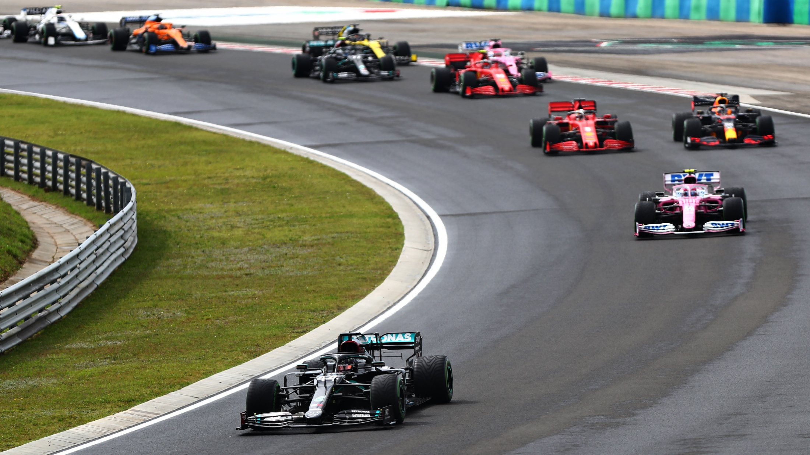

Welcome to my F1 Guide!
I'm Sharliz, and I wanted to put together this Formula One guide specifically for people like me who are just getting into the world of Formula One Racing!
This is a simple, easy-to-follow guide that teaches the sport of Formula 1 racing in a style that appeals to my generation, Generation Z, with some pop culture references and gen Z slang thrown in here and there. That way, it can be easy to understand and get into. If you're like me, you happened to come across the sport through the popular Netflix show that depicts the F1 industry, Formula 1: Drive to Survive. If not, no worries! This guide is going to explain the entire world of F1 in Gen Z terms that will help you understand how everything works!
I hope to teach more people, especially women, about the sport of Formula 1 racing since I have not really seen much female representation in the motorsport industry. This gives the opportunity to learn more about the sport, the drivers, and the culture surrounding it because I think it is very fascinating myself. I want this to be the guide that I would have loved to have handy when I first started getting into the sport!
